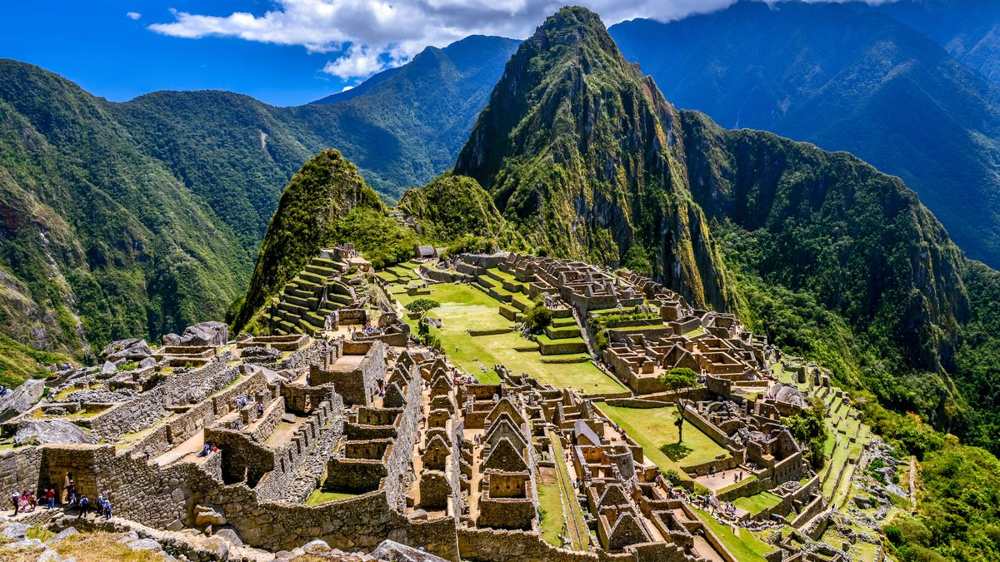

Yellowstone


Geographical Location: North America
Yellowstone is the first national park in the United States. It covers over 2.2 million acres, and provides an opportunity to see wildlife and explore geothermal areas. In fact, Yellowstone contains about half the world's active geysers.
These unique opportunities also bring out a lot of bad decisions among the tourists. Every year visitors injure themselves or the wildlife by getting close to the animals. You can see examples of people making bad decisions by visiting Yellowstone National Park: Invasion of the Idiots, Tourons of Yellowstone, or Cowboy State Daily.
Photo Gallery


Great Wall

Geographical Location: Asia
The Great Wall of China is a world-famous landmark and symbol of China's rich history. Stretching thousands of miles, it stands as a testament to the engineering and architectural prowess of ancient China.
The construction of the Great Wall began over two thousand years ago during the 7th century BC. It served as a defensive fortification to protect Chinese states from northern invasions. Over the centuries, various dynasties contributed to its expansion and maintenance.
Photo Gallery


The Alps

Geographical Location: Europe
The Alps are one of the most iconic mountain ranges in Europe, spanning multiple countries including France, Switzerland, Italy, Austria, and more. They offer breathtaking landscapes, outdoor adventures, and a rich cultural heritage.
The region is a paradise for hikers, skiers, and nature enthusiasts, boasting a wide range of activities and natural wonders.
Photo Gallery


Serengeti National Park
Geographical Location: Africa
Serengeti National Park is a world-renowned wildlife sanctuary located in Tanzania, East Africa. It is famous for its vast savannahs, diverse wildlife, and the annual Great Migration of wildebeests and zebras.
The park offers visitors the opportunity to witness the incredible diversity of African wildlife, including lions, elephants, giraffes, and countless other species.
Photo Gallery


Machu Picchu

Geographical Location: South America
Machu Picchu is located in Peru and is one of the most iconic archaeological sites in the world. It is perched high in the Andes Mountains and offers breathtaking views of ancient Inca architecture.
Visitors to Machu Picchu have the opportunity to explore this historical wonder and immerse themselves in the rich history of the Inca civilization.
Photo Gallery


Great Barrier Reef
Geographical Location: Oceania
The Great Barrier Reef is located off the coast of Australia and is the world's largest coral reef system. It stretches over 2,300 kilometers and is renowned for its stunning marine biodiversity.
Visitors to the Great Barrier Reef have the opportunity to explore vibrant coral formations, encounter a diverse range of marine species, and enjoy various water activities such as snorkeling and diving.